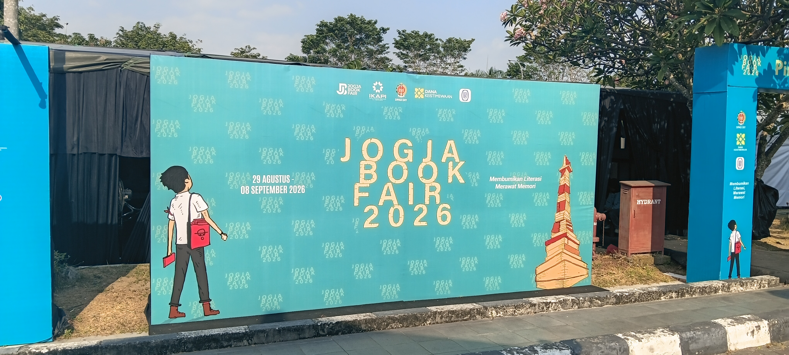
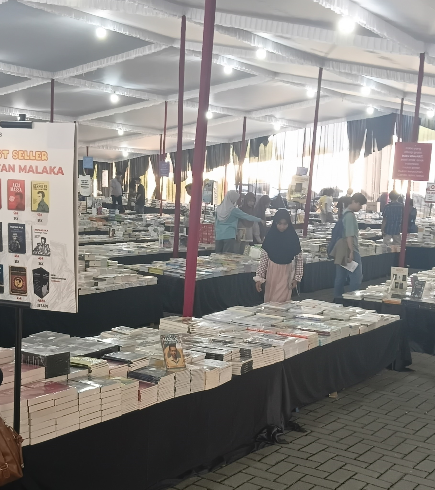
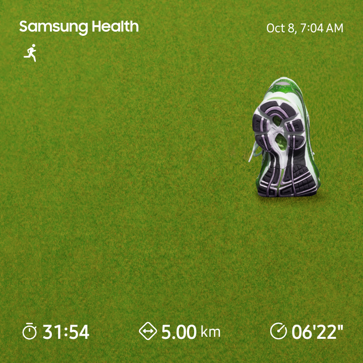
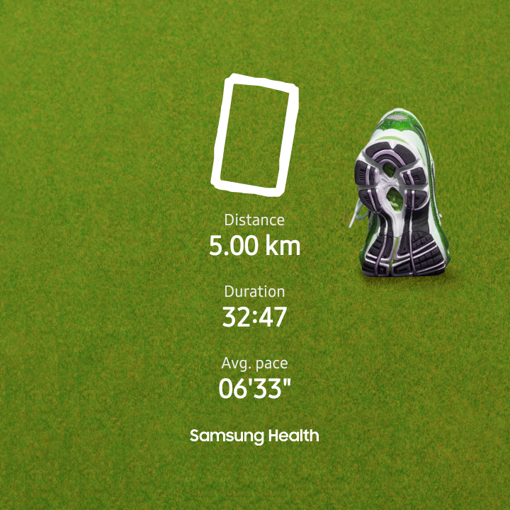

Diary #1
28/6/2026
Upload: 4/9/2026
'A beautiful morning.'
Yesterday, I planned to walk after being absence for two days. Nevertheless, it was failed anymore because the awkwardness to be stared by others in roads. So, the morning passed without being productive. Lazy.. Lazy.. and Lazy.. Fortunately, my mom has arrived and my selfish was immediately vanish. "Shit, how long will I go on like this?."
The sky colored from light to dark as though the gloomy mood falls faster than ever. The bad thing are comming without an invitation. "Go away!. Don't come back. Don't disturb my own mind and feeling," my inner rebels. Almost everyday it comes with the same weapon: showing my weaknesess, failures, and mistakes. I ignore it repeatedly but it always come back.
There is a little conflict between me and my mom at night. She asked me to attend Nariyahan in the rare place. I was shocked and thought about two things: I don't want to go cause I aimn't in a good condition, but this is the right time to meet Pak Dukuh to discuss about LEGAL FIELD. "Just go. You should be happy cause you will meet many friends," she said. I don't have ideas what did she talk about. I don't have a friend (same age) in that community. However, I keep go to the agenda forcefully.
You know what happen to me after arrived at the location?. I have a friend to make some talks. This may the power of mother, right?. She didn't worry about how am I supposed in there. She quite with her convince and it come true. ...
Diary #5
/6/2026
Upload: /9/2026
Wake up in the wonderful morning because i'm going to meet kyky to do an important agenda: "shopping items for Seserahan". We take some times to finish preparations for our wedding next month. Thanks to MATAHARI store Jogja City Mall 👍!, we are ultimately get items that we want:
Those are Rp609,500 in total.
Next, we have lunch at Warung SS Palagan Street.
It is a cozy place of SS's branch we've ever visit and the food portion is larger than others. However, i attacked a stomach afterwards because of eating some spicy foods.
Diary #7
25/8/2026
Upload: 25/8/2026
Thank God for these chances 🤲. For six days, I've been consistently doing sport (cardio) every morning at Sembego's Football Field. My body feels more healthy and being more confident to face activities everyday. See the following data:
- 19/8/26; 07:54; WALKING Dur:39'34"; Steps:4436; Avg.Spd:5.7km/j;
Total Steps: 5651/day - 20/8/26; 07:49; WALKING Dur:1*7'39"; Steps:7646; Avg.Spd:5.6km/j;
Total Steps: 8989/day - 21/8/26; 08:56; RUNNING Dur:9'31"; Dist:1.56km; Avg.Pc:6'4";
Total Steps: 5901/day - 22/8/26; 06:24; RUNNING Dur:12'25"; Dist:2km; Avg.Pc:6'11";
Total Steps: 6007/day - 23/8/26; 07:57; RUNNING Dur:11'34"; Dist:2km; Avg.Pc:5'45";
Total Steps: 9093/day - 25/8/26; 07:56; RUNNING Dur:11'46"; Dist:2km; Avg.Pc:5'52";
Total Steps: 5696/day (temp)
Next days, I'll set a rehearsal program to increase my pace and distance. The program helped by AI for at least not to impose myself and keep the body safe. Bismillah 🤲.
Today is Tuesday. Okay, the following is my next program in this week:
- Wednesday, 26/8/2026 -- RECOVERY with EASY WALK 20-40 minutes
- Thursday, 27/8/2026 -- EASY SPEED 4x400 meters, target pace 5.50-5.30/km
- Friday, 28/8/2026 -- STRENGTH 20-25 minutes
- Saturday, 29/8/26 -- REST
- Monday, 30/8/26 -- LONG EASY RUN 3-3,5 km
Diary #8
27/8/2026
Upload: 27/8/2026
You know "Every job doesn't always going smooth." Aku merasa pekerjaan hari ini tidak sebagus yang kemarin. Kadang ada momen ketika kita sedang di atas angin, kadang ada di bawah tanah. TIDAK SELALU MULUS.
Program Wednesday (26/8) dan Thursday (27/8) telah tercapai. Kemarin aku melakukan EASY WALK selama satu jam lebih empat menit dan hari ini EASY SPEED 4x400 meter dengan pace 5'41", 5'11", 5'29", 5'08".
Diary #9
29/8/2026
Upload: 29/8/2026
Hi, diari ke-9. Hari ini campur aduk perasaan antara bahagia dan sedih. Pekerjaan di hari Sabtu ini terasa sukses Alhamdulillah, Thank God 🤲, karena aku mengajar empat kelas dimana keempat-empat-nya merupakan kelas yang ternyata antusias dan bersemangat untuk belajar. Dan yang paling mengindahkan suasana hatiku adalah mereka semua terlihat seperti menikmati pengajaranku. Luwes sekali pergerakanku selama bekerja dari jam 8 pagi hingga 6 sore tadi. Semoga pencapaian-pencapaian ini bisa terus terjadi padaku selama aku bekerja di Star Winner, Aamiin 🤲.
Jedag-jedug detak jantung mengiringi malam minggu ini. Rapat karang taruna dilaksanakan tepat sebelum jam 9. Aku berangkat ke tempat rapat yang lokasinya hanya puluhan langkah dari rumah. Sejak tadi siang aku menyusun kata-kata yang rencananya akan aku sampaikan di pertemuan rapat malam ini sebagai tanda PAMIT ku kepada teman-teman karang taruna. Ya, karena ini adalah rapat terakhirku di organisasi ini. Bulan berikutnya statusku sudah berganti. Jika melihat para senior yang sudah lebih dulu menikah, mereka selalu berpamitan pada rapat terakhir mereka.
Setelah tersusun dengan rapi tulisan tersebut, aku berangkat dengan percaya diri. Sudah aku ulur-ulur waktu agar terlambat hadir, malah ternyata aku yang menginisiasi rapat dimulai. Selang berjalannya rapat, pandanganku masih kosong. Informasi rapat terlihat masuk telinga kanan dan keluar dari telinga kiri. Aku sibuk menghafal tulisan tadi dengan harapan supaya lancar dalam berbicara nanti. Aku berharap yang terbaik.
Namun, di saat momen itu tiba. Ketua pemuda sudah memberi isyarat padaku untuk menyampaikan ucapanku. Akan tetapi, entah mengapa mulut ini lebih memilih untuk berkata "Tidak Usah Gapapa". Alhasil, tulisan yang sudah kususun sejak siang hari hanya menjadi tulisan hingga di penghujung hari ini. Tak ada sepatah kata pun yang terucap dari mulutku yang terarah ke bahkan satu teman pun. Mungkin satu sisi aku merasa tidak pantas untuk berbicara kepada teman-teman yang mana aku sendiri juga sudah lama sekali tidak berjumpa dengan mereka dalam sebuah kegiatan karang taruna. Which is aku sendiri tidak aktif akhir-akhir ini. Sempat terpikir, "Kamu siapa? sok ingin pamit. Nongol aja nggak pernah". Di sisi lain terasa seperti sebuah kecanggunan yang teramat sangat melihat teman-teman belum mengetahui bahwa sebentar lagi aku akan menikah. Bahkan salaman saat pulang pun canggung parah dan mulut ini sulit sekali mengucapkan informasi penting ini kepada mereka.
Pada akhirnya sih, cepat atau lambat mereka pasti akan mengetahui. Aku yakin informasi semacam ini akan cepat menyebar bagai angin.
Ya Allah, aku memohon ampun jika masih banyak dosa yang aku pernah perbuat. Lindungilah harga diriku dimanapun, kapanpun, dan dalam kondisi apapun. Selalu tuntun aku ke jalan yang lurus. Ridhoi setiap langkahku dan beritahu aku jika langkah yang aku ambil adalah sebuah kesalahan. Aamiin Yaa Robbal Alaamiin 🤲.
Diary #10
30/8/2026
Upload: 30/8/2026
Hari Ahad ya ini?.
Bangun pagi jam 6 lebih. Aku tinggal di Kampung Manisrejo, yang tepat di pagi ini melaksanakan agenda JALAN SEHAT seluruh warga. Saya termasuk warga yang akhir-akhir ini tidak taat. Banyak agenda-agenda yang aku lewatkan sehingga tidak sedikit pengalaman yang tidak terambil. Termasuk jalan sehat itu. Hati ini cenderung memilih olahraga lari seperti biasanya walau akhirnya tidak terlaksana karena pagi itu ternyata aku punya tanggung membuatkan minuman untuk para tukang yang mulai bekerja di rumahku tepat pada pukul 8 pagi. Itu adalah perintah dari Sang Ibu.
Pagi, pukul 10 lebih beberapa menit, merupakan waktu kami (aku dan kiki) bersilaturahmi dengan atasan kantor tempat kami bekerja. Walaupun berbeda kantor, kami memiliki atasan yang sama. Menariknya, silaturahmi kami tidak terjadi di rumah beliau, tetapi di sebuah kafe baru bernama d'aroom cafe di jalan bantulan. Tujuan utama kami adalah memohon doa restu dari beliau dan memohon izin cuti pada tanggal yang telah disepakati. Tak disangka kurang lebih 4 jam kami bertahan di kafe tersebut dengan hanya sekali memesan F&B. Pertemuan itu sangat berkesan karena kami semua saling bertukar informasi, cerita, dan canda gurau yang seru.
Sepulang dari agenda itu, aku mampir ke Grhatama Pustaka untuk menyambangi event Jogja Book Fair 2026. Iseng-iseng saja aku mencari buku yang kira-kira bisa aku miliki. Banyak buku yang terdiskon dan buku yang tetap dengan harga mahal pun juga ada. Bahkan ada suatu meja dengan buku-buku berserakan yang di atasnya tertulis: "Cukup bayar 75 ribu saja Anda bisa ambil buku sepuasnya", tetapi hanya untuk buku dengan penerbit Graha Ilmu. Aku hanya menggendoli satu buku berjudul Enggak Lari Enggak Keren karya Agus Hermawan, seharga 20 ribu. Tak jauh dari pameran buku tadi, ada tempat dengan panggung dan kursi-kursi rapi. Dua Master of Ceremony mengumumkan bahwasanya akan diadakan "workshop intesif menulis artikel" di tempat itu. Aku bimbang, antara ingin ikut atau tidak ingin ikut. Alasan "ingin": karena pasti akan mendapat ilmu dan belum tentu bisa mendapatkan kesempatan tersebut di lain waktu. Alasan "tidak ingin": karena waktu itu sudah kesorean. Aku harus pulang karena pikiran sedang tertuju pada olahraga lari.


Sepanjang jalan aku memikirkan tempat untuk lari sore hari ini. Akan kah di lapangan sembego seperti biasanya?. Sesampainya di rumah, ada mobil suzuki terparkir di teras rumah tengah. Beberapa detik aku tersadar bahwa calon tunangannya mbakku, Mas Fadlun, sedang bersilaturahmi sore itu. Setelah memasuki rumah, dengan segera Ibu memanggilku dan menyuruhku untuk segera menemui tamu yang datang. Beliau seorang diri, berpakaian rapi, menggunakan kemeja abu-abu, perawakan cukup gendhut, serta bersih. Tampak-tampak orang berada. Terbukti jelas beliau memang seorang ustadz sekaligus dozen, bagaimana tidak? kehidupan kampus beliau hapal tiap detailnya, serta hapalan haditz-nya yang aku sendiri pun tak tahu. Dari pertemuan itu, aku hanya berharap yang terbaik untuk kehidupan mbakku di masa depan.
Mas Fadlun pamit pulang sekitar 20 menit sebelum adzan maghrib berkumandang. Tahu apa yang aku lakukan? Aku memilih untuk lari dengan waktu yang kurang baik menurutku. Harusnya sih menunggu waktu maghrib dulu dan solat sebelum lari. Tanpa pikir panjang aku lari di aspal jalan raya selama 18 menit, sejauh 3 kilometer, dengan pace rata-rata 6.10. Itu pun dengan waktu istirahat (berhenti) kurang rata-rata 2-3 menit. Aku tahu waktunya kurang tepat, tetapi secara pribadi aku lebih menyukai memanfaatkan waktu sesempit mungkin untuk melakukan hal baik yang sudah aku tunda berhari-hari, yaitu konsistensi berlari. Aku berharap LARI adalah olahraga pilihan yang tepat untuk investasi kesehatanku jangka panjang.. Aamiin Yaa Robbal Alaamiin 🤲.
Diary #11
1/9/2026
Upload: 2/9/2026
Beberapa hal yang sudah aku tunaikan hari ini:
- Running
- Cek kesehatan caten (calon penganten) ada fotonya
- Sowan ke Pak RW dan Pak RT
- Laden tahlilan Alm. Nyai Mbah Surat
- Iseng ketemu bentuk soal integral seperti ini: \[\int_{0}^{\infty} \sqrt{\frac{e^{-x}}{\sqrt{\frac{e^{-x}}{\dots}}}} dx\] akan dibahas di sini.
Cerita lengkapnya aku uraikan di bawah ini.
Tidur dengan bantal yang keras membuat leher pegal tak karuan ketika bangun pukul 5.30 pagi.
Diary #12
3/9/2026
Upload: 4/9/2026
Poin-poin:
- Bangun pagi pukul 05.30
- Lari bersama Kiki di Mandala Krida: tadinya hanya mau 3km dengan pace ringan, ternyata bisa 5km dengan pace ringan.. udah kayak mandi keringat ada fotonya
- Mencari pengalaman dengan sarapan soto dan minum es doger setelah olahraga di pinggiran Jalan Kusbini ada fotonya
- Shopping kaos, celana olahraga, daster, dan pakaian dalam di Mirota Kampus Jalan Simanjuntak
- Lunch di Warung Inyong yang sudah selesai konstruksi bangunannya
- Mandi di Masjid Agung Gamping sekalian solat dhuhur dan ashar
- Kerja di Mejing 2 \(\rightarrow\) 1 \(\rightarrow\) 2. Transisi dari 2 ke 1 lalu 1 ke 2 dilakukan dengan berjalan kaki. Lumayan juga buat kaki yang udah lari 5km.
- Total langkah hari itu adalah 11.159
- Bertemu Kiki lagi sepulang kerja untuk dinner di Timbangan Tebu sekalian membahas pernikahan
Diary #13
4/9/2026
Upload: 4/9/2026
Poin-poin:
- Latihan Strength 1 putaran: Squat (12x), Glute Bridge (15x), Calf Raise (20x), Lunges (8x/kaki), Push-up (10x), dan Plank (30 detik).
- Memberanikan diri telpon Paklek Ngadiyono dan Pakde Girin (melalui nomor mbak eni).
Diary #14
5/9/2026
Upload: 5/9/2026
Poin-poin:
- Kerja seharian dari pukul 8 pagi hingga pukul 4 sore.
- Menghapalkan lirik lagu say you want let go by James Arthur.
-
Rundown kasar acara boyongan:
- Tamu tidak perlu transit di suatu ruangan, langsung ke tkp aja.
- Tamu tiba disalami oleh para among tamu diiringi lagu.
- Tamu diminta duduk di tempatnya.
- MC membuka acara (mas fendi).
- Pembacaan al-quran (mas didi).
- Pemuda/i laden minuman dan makanan (kiki & zahra).
- Pambagyoharjo dan serah terima kedua pihak keluarga (pak RT/RW & pakde).
- Tausiah dan doa (abah alwi)
- Makan di prasmanan.
- Pamit (ini yang susah aku imajinasikan).
- Sound (pak RT).
- Tenda Kursi Meja (pak RT & pemuda).
- Dekor, geber, & karpet.
- Makanan (mamak).
- Kursi-kursi di samping meja prasmanan.
Diary #15
6/9/2026
Upload: 7/9/2026
Poin:
- Kondangan tempatnya reni di kutoarjo
- Melihat secara langsung proses adat
Diary #16
7/9/2026
Upload: 7/9/2026
Kesedihan yang dirasakan tadi malam masih membekas hingga hari ini. Kepolosan membuat harga diri terinjak-injak. Kegagapan mengunci pikiran supaya tak bisa meluapkan argumentasi. Jika mulut sudah bergetar tapi tak mengeluarkan suara, pertanda buruk melanda. Sindiran lembut simpang siur di telinga. Timbul rasa ketidakpercayaan yang abadi, meragukan segala hal yang terucap lalu membantahnya. Kesungkanan membatasi ruang gerak supaya dapat mempertahankan etika. Begitu kah rapat orang jawa?. Aku orang jawa asli tapi tak mau terkurung bungkus kekakuan adab. Ya tau, adab itu nomor satu, ilmu nomor dua, kata orang-orang. Tapi bukan berarti adab menghancurkan ilmu atau pengetahuan seseorang untuk berpendapat. Ahh ya, GAGAP berbicara. Selesai sudah ...
Ya, tadi malam (ba'da isya) rapat di rumahku dengan sembilan orang. Ehm, bukan sembilan naga. Mereka adalah Pakde Girin, Paklek Ngadiyono, Pak RW, Bu RW, Pak RT, Mas Fendi, Mas Gandung, Kiki (ketua pemuda). Merekalah yang akan menjadi panitia dalam acara boyongan yang bertepatan pada tanggal 20 September 2026, dua hari setelah aku resmi sah menikahi seorang bidadari dari Sumpiuh bernama Veni Rizki Lestari.
Sebelum personel hadir, aku sudah mengira-ngira mungkin nanti aku bakal mendapat hal kurang mengenakkan dari pertemuan rapat ini. Seperti diremehkan. Ya, dan itu benar-benar terjadi. Sepertinya mereka tidak menyadarinya dan mungkin menganggap hal itu biasa saja, tetapi bagiku itu luar binasa.
Diary #17
13/9/2026
Upload: 14/9/2026
Sebuah kesempatan yang tidak pernah terbayang sebelumnya bahwa aku bisa menghadiri event BBW (Big Bazar World), yaitu sebuah event bazar buku international. Tersedia berbagai buku asli karangan penulis international dengan harga promo. Ada fotonya.
Akhir-akhir ini aku sudah menghilangkan rasa suka terhadap buku novel karena aku merasa akan lebih butuh buku yang non-fiksi. Aku sedang berada di kondisi yang mana INFORMASI/PENGETAHUAN adalah nomor satu di kepalaku. Berbagai hal ingin aku pelajari. Seperti saran dari Pak Gita Wirjawan, "agar kita mau melakukan keterbukaan terhadap pengetahuan apapun".
Nah, selagi keinginan untuk membaca buku kembali lagi (setelah beberapa minggu nggembos baca buku), aku ingin mendapatkan buku bacaan berbahasa inggris agar aku bisa gunakan sekalian untuk belajar bahasa inggris. Dari event tersebut akhirnya, aku bisa membawa pulang 3 buku, diantaranya 2 buku internasional, dan 1 buku berbahasa Indonesia. Mereka adalah:
- "The Insomnia Diaries" \(\rightarrow\) Miranda Levy.
- "Always on"
- "Cara menghafal Al-Quran"
Harapannya buku-buku tersebut bisa menjadi awal dari progress ku dalam menguasai bahasa inggris dan menghafal Al-Quran ... Aamiin 🤲.
Diary #18
16/9/2026
Upload: 14/10/2026
Hi diari 16/9/2026,
Hari ini aku mulai cuti kerja untuk 5 hari kedepan karena sedang mempersiapkan agenda besar yang akan terjadi dalam hidupku. PERNIKAHAN. Nanti malam akan diadakan acara tasyakuran dengan mengundang bapak-bapak warga RT 16. Mungkin banyak yang bakalan kaget dan tidak menyangka, secara tiba-tiba HUDA akan segera menikah.
Di kampung, aku tampak sebagai seseorang yang tidak neko-neko (atau 'lempeng' bahasa jawanya), tidak banyak main keluyuran atau sering mendekam di rumah. Memang sudah banyak yang tahu bahwa aku sekarang orangnya sibuk bekerja shift siang-malam. Banyak sekali event kampung yang dilakukan di malam hari, ba'da maghrib atau ba'da isya. Dan aku akhir-akhir ini hampir tidak pernah mengikuti lagi karena baru pulang kerja jam 9 malam. Mungkin itulah kiranya dugaanku jika mereka merasa kaget mengetahui bahwa aku akan menikah.
Perempuan yang akan aku nikahi ini juga bukan orang yang asing amat bagi keluargaku ataupun bagi sebagian tetangga. Sekitar 2 tahun yang lalu, Doi pernah membantu sebagai pendamping mbakku saat menikah. Di situ lah banyak yang akhirnya mengetahui bahwa Doi berstatus 'pacar-ku'. Namanya juga masyarakat jawa, para ibu-ibu langsung melontarkan jurusnya, "Wah, bentar lagi giliran Huda yang nikah sama Mbak ini".. Ya, ternyata insyaAllah akan kejadian besok tanggal 18 September 2026.
Aku merasa lega karena hari ini Masku dan Istrinya sudah sampai di Jogja, sehingga bisa menemaniku melalui acara demi acara. Dengan membawa mobil barunya, mereka membawa pasukan tambahan, yaitu Bulik Darmi dan anak bungsunya yang menetap di Cilegon. Mereka semua akan menginap mulai malam ini di rumahku hingga semua acaraku selesai. Aku berdoa kepada Allah SWT, semoga semua acara yang aku lalui bisa berjalan dengan lancar tanpa suatu halangan apapun.
Terima kasih diari 16/9/2026
Diary #19
18/9/2026
Upload: /10/2026
Hi diari 18/9/2026
Tulisan ini untuk Istriku tercinta
Pagi hari pukul 07.30 di kelas D03 lantai 1 ruang (dekat tangga) dengan mata kuliah 'Geometri Bidang', yang diampu oleh Pak Murdanu. Kala itu kamu maju di depan kelas dan berdiri memperkenalkan diri. Perempuan tinggi, berkacamata hitam, berasal dari Banyumas, yang memiliki nama VENI RIZKI LESTARI. Barangkali aku perlu berterima kasih kepada Pak Murdanu sudah menyuruhmu maju ke depan supaya aku bisa memperhatikanmu. Kali kedua, aku memandangmu sebagai sebuah "hal yang spesial" saat berada di belakang Museum Pendidikan. Dirimu sedang memperagakan seorang Ibu dari dua anak. Tampak dirimu begitu tulus, ikhlas, dan benar-benar terasa seperti seorang Ibu sungguhan. Inilah sosok perempuan yang aku mau. Detik itulah dimana aku mulai memahat namamu di dalam hatiku.
Singkat cerita kita resmi membuat ikatan yang lebih daripada teman. Suka duka kita lalui bersama. Tiada hari tanpa saling mengirim pesan. Begitu berharganya smartphone bagi hubungan kita. Bahkan saat sering terjadi kecerobohan padaku seperti smartphone rusak, tertinggal di kantor, maupun ketlingsut di dalam kamar, kamu begitu khawatir. Selagi belum ada kabar pasti ada sesuatu yang terjadi padaku. Jujur saja, sikapmu sangat over-protective. Selama masih pacaran, ada kalanya aku merasa tidak nyaman karena itu. Di sisi lain, aku sadar bahwa kamu benar-benar sayang padaku. Kamu menjaga hubungan ini supaya tidak mempunyai lubang sedikit pun.
Terima kasih banyak ya sayang!. Selama kurang lebih 7 tahun ini, kalau bukan karena kesabaran, keikhlasan, dan kekuatanmu menghadapi sikapku, mungkin kita tidak tidur dalam satu ranjang saat ini. Aku sangat beruntung mendapatkan wanita sepertimu. Ikatan yang sudah kita ciptakan pada hari ini (18 September 2026) harus dijaga selamanya. Mohon maaf jika selama ini aku masih banyak kekurangan. Begitu pula keluargaku, terutama Ibuku. Maafkan segala kesalahan kami ya.
Semoga keluarga kecil kita ini menjadi keluarga yang sakinah, mawadah, warrahmah. Lancar rezeki. Segera dikaruniai anak yang soleh-solehah. Semua anggota keluarga sehat dan panjang umur. Robbana hablana min azwajina wadurriyatina qurrota a'yun.. Waj 'alna lil muttaqina imama.. Aamiin yaa robbal 'alaamiin 🤲.
With love,
Huda
H-1 pernikahan (17/9/2026). Aku tidak menyangka, ingin mengeluarkan air mata 😭, saat melihat para saudara, Pakde-Bude, Paklek-Bulek, dan sepupu, berkumpul di dalam rumahku untuk bersiap melakukan perjalanan jauh ke Sumpiuh, Banyumas. Sangat jarang seluruh keluarga besar berkumpul seperti ini. Terakhir saat pernikahan masku di Tasikmalaya, Jawa Barat. Itu pun sudah enam tahun yang lalu. Pendapat seorang sepupu: "Kamu itu adalah cucu dari Simbah Hadi yang paling terakhir yang belum menikah. Makanya semua bakal antusias buat acara ini." Masuk akal juga ya 😂.
Satu rombongan (total: 19 orang) berangkat dari Jogja pukul 2 siang. Melalui rute yang berbeda dari kala lamaran, kami tiba di tempat tujuan tanpa tersendat oleh macet sama sekali. Pukul 8 malam kami masuk ke Sebuah besar yang lebih dari cukup untuk kami beristirahat. Rumah Bude-nya Ina (Sahabat dari Istriku). Hospitality yang luar biasa dari keluarga mempelai wanita membuatku merasa lega membawa rombongan jauh-jauh kemari. Suasana yang nyaman, makanan yang luar biasa lezat dan bermacam-macam, ada bakso, ayam bumbu lengkap (terima kasih Bude Wiwi 😄).
Namun, setiap perjalanan pasti ada aja ya jalan retaknya. Malamnya, terjadi sesuatu yang tak disangka-sangka: AIR TANDON HABIS. Hal itu disadari setelah seorang bulek atau bude hendak buang air kecil di kamar mandi. Pompa air tidak segera menyala meski semua saklar yang ada di dalam rumah itu dinyalakan. Wah, aku langsung panik. Tidak tahu menahu terkait saluran air di rumah tersebut. Ditambah aku sempat mendengar kabar bahwa Sumpiuh mengalami bencana kekeringan. Kacau sekali malam itu hingga membangunkan yang sedang tidur. Setelah beberapa menit, seorang sepupu akhirnya menemukan akar masalahnya. Ternyata, rumah itu menggunakan pipa air yang mengalir dari PAM, sehingga pengisian air ke tandon tidak melalui mesin sanyo yang diambil dari sumur tanah, melainkan mengalirkan air dari pipa tersebut ke dalam tandon. Untuk melakukan hal tersebut, perlu kran pipa yang mengarah ke tandon perlu dibuka. Setelah hal itu dilakukan, selesailah masalah malam itu, walau kualitas tidurku tidak benar-benar baik.
Hari H pernikahan (18/9/2026).
Diary #20
20/9/2026
Upload: /10/2026
Diary #21
26/9/2026
Upload: /10/2026
Diary #22
/9/2026
Upload: /10/2026
Diary #23
7/10/2026
Upload: 8/10/2026
Hi diari 7/10/2026,
Setelah sekian lama tidak menulis diari, rasanya struktur berbicaraku mengalami penurunan performa. Sering kali aku kesusahan mengucapkan suatu kata yang seolah terhapus dari kamus otakku. Gagap lah kalo aku bilang mah!. Saat di kantor, teman sekantor mungkin mengira aku sedang banyak pikiran atau masalah karena aku terlihat tidak menikmati obrolan. Ya, entah kenapa caraku berbicara tidak semulus yang dulu. 'Ya, Ya, Ya' saja tanpa menyuguhkan argumen atau opini sendiri.
Tersadar akan apa yang terjadi pada diri sendiri, aku berniat pada rutinitas menulis diari. Dengan melakukan ini, aku bisa menuahkan apa yang sedang aku pikirkan dan rasakan. Menurut sang penulis Indonesia, Dea Anugerah, "Menulis itu adalah suatu kegiatan untuk menata pikiran." Dengan menulis, satu persatu gagasan yang terpikir di dalam otak dituahkan ke dalam tulisan. Nah, teknik kepenulisan akan memaksa penulis untuk menyusun gagasan-gagasan tersebut sehingga menjadi tulisan yang padu. Jika sering menulis, otak akan terbiasa melakukan menyusun kalimat yang padu dengan lebih cepat. lama kelamaan tanpa menulis pun otak akan secara otomatis menuahkan apa yang dipikirkan melalui mulut sehingga terbentuk komunikasi yang baik.
Aku percaya tentang ikhwal tersebut, walaupun belum pernah merasakan dampaknya secara signifikan. Sadar diri bahwa konsistensi menulisku tidak sebanding dengan Dea yang telah menulis bertahun-tahun dan setiap hari. Namun, seperti kata pepatah, TANPA MENCOBA, TIDAK AKAN TAHU. Pelajaran yang aku petik dari diari ini adalah aku akan berusaha untuk menulis diari kembali setidaknya seminggu sekali, demi mengolah pikiran agar memiliki kemampuan komunikasi yang lebih baik.
Terima kasih diari 7/10/2026.
Diary #24
8/10/2026
Upload: 8/10/2026
Hi diari 8/10/2026,
Terima kasih Ya Rabb, pagi yang terang ini Engkau berikan aku kesempatan untuk kembali Run setelah empat hari absen. Jarak 5 km hari ini tercapai dengan waktu 31 menit 54 detik. Meskipun perolehan waktu tersebut menurun 34 detik dari empat hari yang lalu, aku bersyukur tetap kuat berlari sejauh 5 km tanpa henti.

Selama proses berlari, pernapasanku sudah sangat ngos-ngosan saat di kilometer ke-2. Akan tetapi, aku bisa mengontrol ritme berlari hingga kilometer terakhir. Kakiku sebenarnya kuat, hanya pernapasan dan detak jantung yang belum terbiasa.
Bahkan terjadi side stitch (sudukan) beberapa kali. Mungkin karena jarak makan-minum dan lari hanya satu jam. Empat hari yang lalu, dengan jarak antara makan-minum dan lari adalah 2 jam, aku tidak mengalami side stitch. Kendati demikian, dengan mengurangi pace, menenangkan diri, dan mengatur pernapasan perut, nyeri itu bisa teratasi. Seharusnya aku melakukan latihan strength di sela-sela Run agar menguatkan otot-otot kaki, serta latihan pernapasan supaya meningkatkan endurance dan mengontrol HR (Heart Rate).
Namun, semua itu belum terlaksana di antara empat hari yang lalu karena sulitnya latihan sendiri. Mencari motivasi untuk tetap konsisten dan disiplin latihan tanpa ada yang mengarahkan, tanpa diberi tantangan. Semua dilakukan secara mandiri tanpa seorang coach. Yaelah, pasti mahal kalau manggil coach mah!. Jujur hal itu sangat sulit di samping banyaknya urusan, tetapi jika itu berhasil setelah dilakukan dalam waktu yang lama, AKU YAKIN HASILNYA AKAN SANGAT LUAR BIASA.
Terima kasih diari 8/10/2026.
Diary #25
9/10/2026
Upload: 10/10/2026
Setelah terbangun dari tidur pada pukul 3 pagi, aku dan istri menunaikan ibadah solat Tahajud. Sesuai dengan rencana kami sebelumnya, kami berniat untuk melakukan jogging bersama di Stadion Maguwoharjo. Tempat itu adalah sebuah ikon dari desa Maguwoharjo. Ketika aku berada di desa, orang-orang bertanya, "Rumahmu dimana Mas Huda?", "Maguwoharjo". Kebanyakan dari mereka langsung menyahut, "Sama stadion itu mananya?". Begitu terkenalnya markas PSS Sleman itu.
Pukul 06.30 kami menapakkan kaki di dalam pagar Stadion Maguwoharjo. Lucunya, ini merupakan kali pertamanya aku masuk ke sana. Di kala teman-teman kecil ku asik menonton sepak bola di stadion itu, aku bahkan tidak pernah ingin ke sana. Mungkin beberapa anak kampung sini (akamsi) masih ingat tentang polemik yang ada tempat itu. Sering terjadi kericuhan setelah laga sepak bola selesai. Banyak yang akhirnya luka-luka, ada yang sampai meninggal. "Siapa coba yang mau datang ke tempat menyeramkan itu?".
Namun, kabar-kabar semacam itu sekarang sudah memudar. Bahkan stadion itu sudah jarang dipakai untuk pertandingan sepak bola. Malahan dipakai untuk event seperti pentas musik dan lain sebainya. Oleh karena itu, tidak masalah bagiku untuk datang ke sana sambil melakoni hobi baruku yaitu berlari. Bagaimana tidak lebih semangat bahwa sekarang sudah ada pasangan yang selalu setia menemaniku kemanapun.. ehehe..
Tidak seperti berlari di lapangan dekat kampung, di stadion banyak saingan yang sepertinya pelari senior. Mentalku mulai diuji. Memang aku akui lintasan di sana lebih nyaman untuk berlari. Akan tetapi, aku hanya bisa menamatkan jarak sejauh 3 km dalam 19 menit, masih dengan rata-rata pace sub 6. Sebenarnya aku tidak berkecil hati mengenai hasil ini. Mengingat sehari yang lalu aku sudah lari 5 km, sehingga lari kali ini aku anggap sebagai recovery run. Besok Sabtu aku akan rest dan menghabiskan waktuku untuk bekerja dan liburan. Kemudian, aku akan berlari lagi di hari Minggu nya.
Terima kasih diari 9/10/2026
Diary #26
10/10/2026
Upload: 10/10/2026
Hi diari 10/10/2026,
Hari Sabtu kali ini seperti biasa kerja full session ngantor dari jam 8 pagi hingga 6 sore dengan total mengajar 4 kelas. Sesi pertama aman saja, tetapi sesi berikutnya cukup membagongkan. Mengajar kelas gabungan (dua kelas berbeda dijadikan satu) latihan soal-soal TKA Matematika lanjut (Matlan) #3. Itu pertemuan pertama aku mengajar latihan soal Matlan #3 dan lembar soalnya baru dicetak setengah jam sebelum sesi itu dimulai. Maka aku langsung mengerjakan soal tersebut sesegera mungkin untuk bisa memberikan kunci jawaban bagi para siswa di akhir sesi nanti.
Ada hal menjengkelkan yang terjadi. Di penghujung waktu, aku membahas satu nomor terakhir. Singkatnya, yang aku bahas di papan tulis tidak tidak menghasilkan jawaban yang tertera di opsi. Akan tetapi, seorang siswa yang memang cukup rajin dan pintar di kelas tersebut menemukan jawabannya. Omaigattt... Ya, kemudian aku keluarkan jurus basa-basi agar tidak terlalu merasa malu. Yang membuatku lebih kesal adalah kejadian ini tidak hanya terjadi di satu nomor soal saja, tetapi terjadi juga di nomor yang lain. Pada akhirnya, ikhwal ini harus menjadi sebuah pembelajaran buatku supaya kedepannya tidak mengulanginya lagi.
Empat sesi akhirnya berakhir tepat di jam 6 sore, tidak terjadi hal kurang mengenakkan di kelas setelah sesi kedua. Lancar-lancar saja, Alhamdulillah. Namun, itu bukan berarti tidak hal di luar nurul lagi yang terjadi. ADA, apa itu??. Karena saking capeknya melewati pekerjaan di hari ini, aku sangat bersemangat untuk ingin segera melepas lelah dengan hang out bersama istri yang sudah tiba di luar kantor untuk menjemputku. Aku pun tergesa-gesa untuk segera keluar. Masalahnya, kurang dari setengah jam ketika posisiku sudah sekitar 2 km dari kantor, smartphone ku tertinggal di kantor tadi. lol...
Smartphone, barang yang di zaman ini sudah bagaikan bagian dari tubuh sendiri. Tidak boleh terpisah. Ya, urusan apa-apa lewat barang itu. LEBIH APES LAGI, tertinggalnya di Hari Sabtu. Hari Minggunya libur kerja. Hari Senin baru bisa kembali smartphone-nya. LEBIH GILA LAGI, cincin nikahku juga ikut tertinggal di tempat yang sama. Akan tetapi, keberadaannya belum diketahui alias kemungkinan besar hilang.
Akibatnya, hang out bersama istri di malam itu cukup menegangkan karena DOI ngambek dan berkali-kali aku dibilang untuk kedepannya berhati-hati dalam menaruh barang. Dia lebih sedih cincinku hilang daripada smartphone tertinggal. Ya, karena kejadian 'ketinggalan' seperti itu tidak hanya terjadi kali ini saja. wkwkwk... Namun, Alhamdulillah, kami bisa mencairkan suasana yang tegang tadi dan melewati malam minggu dengan happy jalan-jalan ke Jogja City Mall (JCM). Pulang membawa dua baju baru untukku.
Terima kasih diari 10/10/2026
Diary #27
14/10/2026
Upload: 14/10/2026
Hi diari 14/10/2026,
Alhamdulillah Rabu ini diawali dengan bangun pukul 4 pagi. Dilanjutkan solat subuh berjamaah di masjid dan membaca Al Quran setelahnya. Hingga kini aku sudah sampai di juz 6, masih di Surah An Nisa. Sudah lama aku tidak merasakan sensasi ini: dinginnya suhu subuh yang menusuk kulit, kesunyian jalan menuju masjid, beberapa langkah mendengar dengkuran seseorang dari sebuah rumah, perasaan bahagia menjadi orang yang bisa bangun lebih pagi. Aku tidak bohong, aku sangat bahagia dan bersyukur. Datang ke masjid sebagai jamaah subuh dengan status 'kawin' untuk pertama kali sejak hari dimana aku dinyatakan sah.
Sayangnya, Istri masih tertidur. Itulah rutinitasnya ketika sedang haid. Kurasa rata-rata perempuan juga sama, karena sedang haid, mereka tidak perlu solat, malah dilarang. Makanya untuk istriku yang memang suka tidur (seperti yang dia bilang), dia masih di ranjang hingga aku selesai membaca kitab suci. Aku juga menyadari bahwa dia masih berada di fase transisi dari single ke bersuami. Ditambah sekarang tinggal di rumah mertua. Dia sepenuhnya sudah menjadi milikku dan menjadi bagian yang sah dari keluargaku. Jelas itu bukan sesuatu yang mudah untuk diadaptasikan secara cepat. Selama hidup di kos an, dia pulang pergi bekerja cukup memerlukan waktu kurang dari lima menit. Namun sekarang, butuh 30 menit setiap pulang pergi bekerja. Itu pun jika tidak macet di perjalanan. Harapannya, semoga dia betah tinggal di sini.
Tidak kubiarkan sensasi pagi ini dilewati secara percuma, aku isi dengan menulis diari dan mengolah pikiran supaya lebih tertata. Selagi ada waktu ya kan!. Pukul setengah 7 aku berangkat ke lapangan maguwoharjo berjalan kaki lengkap dengan sepatu lari. Walaupun waktu jarak 5km yang didapat hari ini di bawah PB, yaitu 32 menit 47 detik, tetapi aku tetap bersyukur (Alhamdulillah) karena bisa menyelesaikan jarak tersebut tanpa cedera. Harapannya semoga aku tetap disiplin dan konsisten berolahraga, begitu juga dengan Istriku Aamiinn..

Terima kasih diari 14/10/2026
Diary #28
/10/2026
Upload: /10/2026